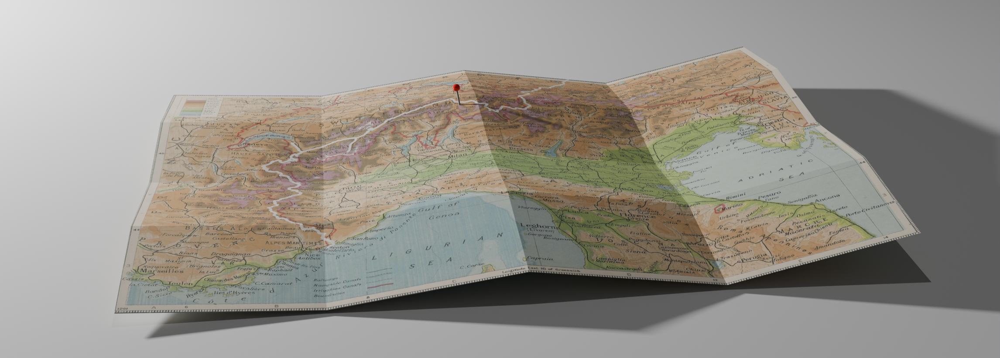

Goodbye Glacier Ride
A 1.500 km cycling trip from Munich to Monaco with 30.000 altimeters. Passing the massive glaciers of the Alps and crossing its most spectacular cols.
A two week cycling adventure to enjoy the beauty of the Alps and face the harsh reality of climate change.
Ready to join the Goodbye Glacier Ride?